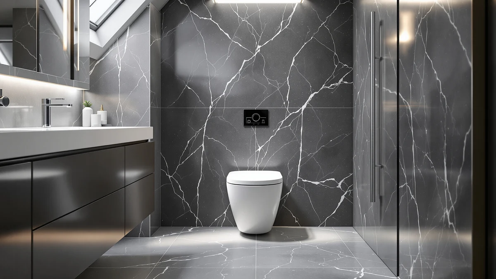

Best One Piece Toilets Under $300 (2026): 8 Budget-Smart Picks
Prices and picks verified as of August 2026. Independent, reader-supported reviews.


Quick Answer
If you want a comfortable, reliable one-piece toilet without breaking a $300 budget, the AKNIRL Elongated One Piece Toilet is the easiest recommendation on this list, pairing an elongated bowl with a seamless skirted design for $189.99. We compared eight one-piece toilets under $300 on rough-in fit, flush performance and verified owner feedback, and every pick here balances comfort against that hard budget ceiling.
Our pick: AKNIRL Elongated One Piece Toilet, $189.99 Check Price on Amazon
Bottom line: our top pick is the AKNIRL Elongated One Piece Toilet with 17.3" ADA Comfort at $189.99. The best budget option is the DeerValley Compact One Piece Toilet with Comfortable Seat at $198.99.
Things to Know Before You Buy
- Elongated vs compact: an elongated bowl is roughly two inches longer and more comfortable for most adults, while a compact bowl trades that length for a smaller footprint that suits tight half-baths.
- Measure your rough-in first: that is the distance from the finished wall to the center of the drain bolts. Most of these toilets are built for the standard 12 inches, so confirm yours before ordering.
- Check whether a seat is included: at this price point most listings sell the seat separately. Budget $30 to $50 for a matching elongated or compact seat if one is not in the box.
- One-piece means less cleaning: the tank and bowl are molded as a single unit, so there is no tank-to-bowl seam to trap grime, though the tradeoff is a heavier fixture to install.
- Flush type varies: under $300 you will mostly find gravity or siphon flushes, with a couple of dual-flush models that let you save water on lighter use.
The best one piece toilet under $300 has to deliver the comfort of a full-size elongated bowl without cutting corners on the flush system that clears waste on the first try. Plenty of buyers assume a seamless one-piece design and a comfortable seat height only show up once you cross $350, but that is not true if you know which models earn their price. We compared eight one-piece toilets that all land under $300, from a compact $189.99 pick to a $291.23 elongated model that nearly touches the ceiling, and looked past the listing copy to what owners actually report after months of daily use.
Every toilet here skips the tank-to-bowl seam that makes two-piece models a pain to scrub, and most pair that with an elongated bowl for extra seating comfort. Where they differ is rough-in fit, whether a seat ships in the box, and how the flush handles paper and waste in a single pass. A couple of compact models trade bowl length for a smaller footprint, which matters if your bathroom is tight.
We sorted through the field and narrowed it to eight models worth your money, led by the AKNIRL Elongated One Piece Toilet at $189.99. Below, each pick lists the honest drawbacks alongside what it does well, so you know exactly what you are trading for a lower price.
Why You Should Trust Us
This guide is written and maintained by Ilane Tall, who runs a network of bathroom-focused review sites and spends more time than is reasonable comparing fixtures on the specs that actually predict satisfaction rather than marketing copy. We do not run a fake testing lab and we did not install eight toilets in a warehouse to time their flushes. What we do is read every spec sheet, cross-check rough-in, bowl height and flush type against listing photos and hundreds of verified owner reviews, flag the complaints that keep recurring, and refuse to recommend anything we would not put in our own bathroom. Our Amazon commissions never change a ranking.
How We Picked
We started with one-piece toilets priced at $300 or less that are in stock and shipping to US addresses, then filtered on the details that separate a good budget toilet from a regretted purchase: a 12-inch rough-in that fits standard homes, a flush system that clears the bowl reliably according to owner reports, a seamless skirted or semi-skirted body that wipes clean in one pass, and either a comfort-height seat or a compact footprint depending on the bathroom it is built for. We gave extra weight to models that include a soft-close seat in the box, since a separate seat purchase quietly adds $30 to $50 to the real price. We set aside anything with a recurring pattern of leaks, cracked-on-arrival complaints or weak-flush reports, and made sure the final eight span the range from $189.99 up to $291.23, near the $300 ceiling, so there is a sensible pick regardless of how close to that ceiling you want to stay.
How We Compared
Since we do not stage a warehouse full of installed toilets, our evaluation is a documentation and owner-experience review rather than a hands-on lab test, and we would rather say that plainly than fake a testing rig. For each model we mapped the published price, rough-in and bowl style against what buyers report in photos and long-term reviews, watched for the failure patterns that surface after a few months of use such as running fills or loosening seat hinges, and weighed how each flush system performs against its price relative to the others on this list. Where a listing implied a feature we could not corroborate in owner feedback, we treated it skeptically rather than repeating it as fact. The result is a shortlist built on the specs and real owner experiences that predict whether a sub-$300 toilet will still be working well a year from now.
Our Picks

AKNIRL Elongated One Piece Toilet
What we like
- Elongated bowl at the lowest price in this roundup, no compact trade-off
- Seamless one-piece skirted body wipes clean without a tank-to-bowl seam
- Straightforward gravity flush that owners describe as reliable for daily use
- Comes in well under the $300 ceiling, leaving room in the budget for a seat
Flaws but not dealbreakers
- No soft-close seat included at this price, budget another $30 to $50
- Fewer extras like dual-flush or a designer finish than the pricier picks below
| Material | — |
| Size | — |
The AKNIRL Elongated One Piece Toilet is the easiest recommendation on this list if price is your main constraint. At $189.99 it undercuts every other pick here by at least $9, and it does that without falling back to a smaller compact bowl. You still get the elongated seating comfort and the seamless one-piece body that skips the grimy tank-to-bowl seam two-piece toilets are known for.
The tradeoffs are what you would expect at this price. There is no seat included, so factor that into your real budget, and the flush is a standard gravity system rather than a dual-flush or pressure-assisted design. For a straightforward bathroom refresh where comfort and price matter more than extra features, this is the one to check first.

DeerValley Compact One Piece Toilet
What we like
- Compact footprint that fits tighter bathrooms than the elongated models on this list
- Standard 12-inch rough-in so it drops into most existing plumbing without modification
- One-piece seamless design keeps cleaning simple despite the smaller size
- Priced under $200, leaving room in the budget for a seat or hardware
Flaws but not dealbreakers
- Compact bowl means less legroom than the elongated picks for taller users
- Seat sold separately
| Material | — |
| Size | 12" Rough-In |
The DeerValley Compact One Piece Toilet solves a different problem than most of the picks on this list: it is built for bathrooms where floor space, not budget, is the constraint. At $198.99 it stays comfortably under the $300 ceiling while trimming the bowl length that a half-bath or small guest bathroom often cannot spare.
It keeps the standard 12-inch rough-in that fits the vast majority of US homes, so swapping in a compact model does not require replumbing. The tradeoff is legroom. Taller users may find the shorter bowl less comfortable than the elongated options on this list, so measure your space and your household before choosing compact over comfort.

Sonderzone Elongated One Piece Toilet
What we like
- Elongated bowl at a price close to the compact models on this list
- Seamless one-piece body with no tank-to-bowl seam to scrub
- Straightforward installation profile similar to the other budget picks here
- Comes in nearly $100 under the $300 ceiling
Flaws but not dealbreakers
- No dual-flush option, only a single flush setting
- Seat sold separately, add it to your real budget
| Material | — |
| Size | — |
The Sonderzone Elongated One Piece Toilet splits the difference between the ultra-budget AKNIRL pick and the compact DeerValley, giving you a full elongated bowl for $199.99. That is a meaningful jump in comfort over a compact bowl for only about $10 more than our cheapest pick.
It sticks to a single flush setting rather than the dual-flush water savers found on some of the pricier picks below, and like most toilets in this range, the seat is sold separately. If elongated comfort at close to $200 is the priority and you do not need dual-flush water savings, this is a sensible middle option.

HOROW T0338W Compact One Piece
What we like
- Compact bowl that suits smaller bathrooms without sacrificing a standard rough-in
- Backed by HOROW's broader one-piece lineup, which shows up across multiple price points in this category
- Seamless one-piece body simplifies cleaning versus a two-piece compact toilet
- Stays well under $300 while adding brand consistency
Flaws but not dealbreakers
- Compact bowl trades some legroom versus the elongated picks
- Priced higher than the other compact option here despite a similar footprint
| Material | — |
| Size | 12" Rough-in |
The HOROW T0338W Compact One Piece is a smaller-footprint option from a brand that shows up repeatedly across one-piece toilet reviews, which is a reasonable proxy for consistency across its lineup. At $229.99 it sits in the middle of this roundup's price range.
Like the DeerValley compact pick, it trades some bowl length for a smaller footprint, so it is best suited to a half-bath or a bathroom where floor space is seriously limited. If you want a compact model but prefer a familiar name with a track record in this specific product line, this is worth the roughly $30 premium over the cheaper compact option.

Casta Diva Elongated One Piece
What we like
- Full elongated bowl for comfortable seating
- Seamless one-piece skirted design for easier cleaning
- Priced with meaningful headroom under the $300 cutoff
- Rounds out the mid-tier options between the budget and near-$300 picks
Flaws but not dealbreakers
- No standout feature like dual-flush or a designer finish to justify paying above the cheaper elongated options
- Seat sold separately
| Material | — |
| Size | — |
The Casta Diva Elongated One Piece sits squarely in the middle of this roundup at $236.99, more than the budget elongated picks but with real headroom before the $300 ceiling. It offers the same core formula as the other elongated toilets here: a full-size bowl and a seamless one-piece body.
What it does not offer is a standout feature such as dual-flush or a designer finish that would justify paying more than the Sonderzone or AKNIRL picks above. It is a solid, unremarkable choice if those two are out of stock or you simply prefer the listing photos, but there is no compelling reason to pay the premium if comfort alone is your goal.

DeerValley Elongated One-Piece Toilet with
What we like
- Dual-flush system lets you choose a light or full flush to save water over time
- 18.2-inch seat height is taller than a standard bowl, easier for people with knee or back issues
- Elongated bowl for full-size comfort
- Same trusted DeerValley line as the compact pick earlier in this list
Flaws but not dealbreakers
- Costs about $40 more than the mid-tier Casta Diva for the added dual-flush and height features
- Taller seat height may feel less natural for shorter users or young children
| Material | — |
| Size | 18.2" H with Dual Flush |
The DeerValley Elongated One-Piece Toilet with dual-flush is the first pick on this list to add a genuine feature upgrade instead of only occupying a price point. At $240.80, it includes a dual-flush system, so you can choose a lighter flush for liquid waste and save water over the life of the toilet, plus an 18.2-inch seat height that is taller and easier to sit down onto and stand up from than a standard bowl.
That combination of comfort height and water savings makes it a sensible upgrade from the plainer mid-tier elongated picks if you are willing to spend the extra $40 or so. The taller seat is a genuine plus for older adults or anyone with knee or back issues, though younger kids or shorter users may find it a little tall at first.

One-Piece Toilet for Bathroom Comfort
What we like
- 16-inch comfort height sits closer to standard chair height than a typical toilet bowl
- Dual-flush option for water savings on lighter use
- Elongated bowl for full-size seating comfort
- Comes in a little under $250, leaving a real buffer before the $300 ceiling
Flaws but not dealbreakers
- Generic listing name and packaging suggest a less established brand than DeerValley or Swiss Madison
- Seat sold separately
| Material | — |
| Size | 16" H & Dual Flush & Elongated |
The EliteEdge One-Piece Toilet for Bathroom Comfort combines a 16-inch comfort height with a dual-flush system for $249.99, matching the pricier DeerValley pick's feature set for about $9 less. The elongated bowl and comfort height work together to make sitting down and standing up noticeably easier, which matters for older users especially.
The brand itself is less established than DeerValley or Swiss Madison, and the generic product name on the listing reflects that, so buyers who want a recognizable name may prefer to pay a little more elsewhere on this list. For anyone comfortable buying from a newer brand in exchange for a fair price on comfort-height and dual-flush features, it holds up as a legitimate mid-range pick.

St. Tropez One Piece Elongated
What we like
- Established Swiss Madison brand name with a longer track record than several other picks here
- 10-inch rough-in fits older homes that a standard 12-inch toilet cannot
- Elongated bowl for full-size comfort
- Rounds out this list as the closest option to the $300 ceiling without going over
Flaws but not dealbreakers
- The most expensive pick on this list, only about $9 under the $300 cutoff
- The 10-inch rough-in is a specific fit, confirm your measurement before ordering since it will not work in a standard 12-inch space
| Material | — |
| Size | 10" Rough-in |
The St. Tropez One Piece Elongated from Swiss Madison is the priciest pick in this roundup at $291.23, close to the $300 ceiling. What that money buys is a recognizable, established brand name and a 10-inch rough-in, a specific measurement that matters if you live in an older home built before the 12-inch standard became common.
That rough-in is also the biggest reason to think twice: it will not fit a standard 12-inch space, so measure the distance from your finished wall to the drain bolts before you order. If your home happens to need a 10-inch rough-in, this solves a fitting problem the rest of this list cannot, and the Swiss Madison name adds some peace of mind at the top of the budget range.
Quick Comparison
| Product | Material | Price | Rating | Best for | Get it |
|---|---|---|---|---|---|
| AKNIRL Elongated One Piece Toilet | — | $189.99 | 4 | Lowest price overall | View on Amazon → |
| DeerValley Compact One Piece Toilet | — | $198.99 | 4 | Small bathrooms, 12-inch rough-in | View on Amazon → |
| Sonderzone Elongated One Piece Toilet | — | $199.99 | 4 | Elongated comfort near $200 | View on Amazon → |
| HOROW T0338W Compact One Piece | — | $229.99 | 4 | Compact bowl, trusted line | View on Amazon → |
| Casta Diva Elongated One Piece | — | $236.99 | 4 | Mid-tier elongated comfort | View on Amazon → |
| DeerValley Elongated One-Piece Toilet with | — | $240.80 | 4 | Dual-flush, taller seat | View on Amazon → |
| One-Piece Toilet for Bathroom Comfort | — | $249.99 | 4 | Comfort height + dual-flush | View on Amazon → |
| St. Tropez One Piece Elongated | — | $291.23 | 4 | 10-inch rough-in, established brand | View on Amazon → |
The Competition
Plenty of one-piece toilets did not make this list, and price was usually the reason. Several well-known big-box brands, including Kohler, TOTO and American Standard, sell excellent one-piece toilets, but their comparable elongated, comfort-height models typically cost significantly more once you add a seat and their premium finish, which puts them outside the budget this roundup is built around.
We also passed on a number of ultra-cheap listings priced even below our AKNIRL pick. They undercut on price in a few ways: some ship without a seat, others rely on a weaker gravity flush, and a few carry a pattern of cracked-on-arrival complaints in owner reviews. A toilet that arrives broken or leaks is no bargain regardless of the sticker price.
At the upper edge of $300, we set aside a few smart-toilet and bidet-seat combinations that technically list under the ceiling but add electrical requirements and an entirely different feature set than a straightforward one-piece toilet. If you want heated seats and a washlet, that is a separate buying decision from the eight picks here. For most budgets, though, the picks above are still the smarter choice: the best one piece toilet under $300 on this list remains the AKNIRL Elongated One Piece Toilet, and the seven alternatives around it cover nearly every situation those pricier or smart-toilet options are built for.
Frequently Asked Questions
Can I get a good one-piece toilet for under $300?
Yes. All eight toilets in this list are one-piece designs priced at $291.23 or less, and several stay well under $200. You do give up a few extras that show up on pricier models, such as a designer matte finish or an included premium seat, but the core comfort and reliability are there at this price.
What is the difference between a compact and an elongated one-piece toilet?
An elongated bowl is about two inches longer and more comfortable for most adults to sit on, while a compact bowl trades that extra length for a smaller footprint that fits tighter bathrooms. The DeerValley and HOROW compact picks on this list are built for half-baths or small guest bathrooms where a full elongated toilet would not fit comfortably.
Do I need to buy a seat separately for these toilets?
Most toilets in this list sell the seat separately, so budget an extra $30 to $50 for a matching elongated or compact seat unless the listing specifically states one is included. Always check the current listing before you order, since inclusions can change.